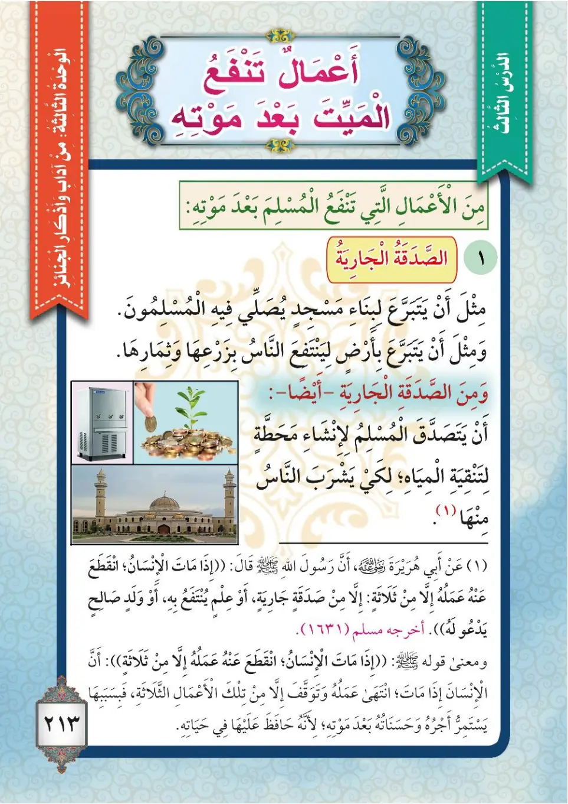
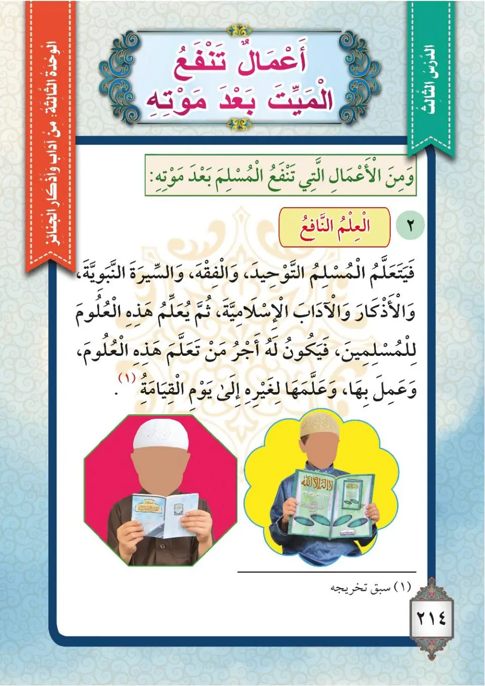
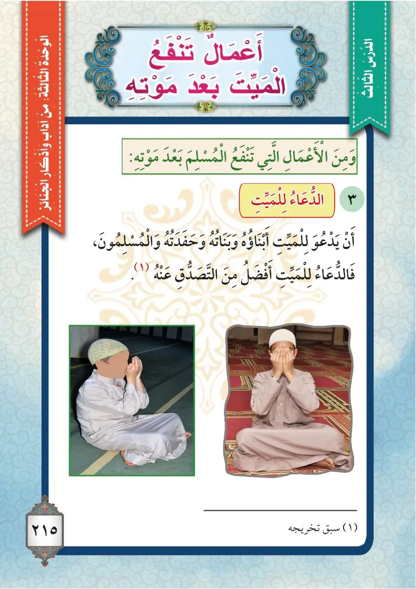

Stage 3·المرحلة الثالثة💬 Unit 1
أَعْمَالٌ تَنْفَعُ الْمَيِّتَ بَعْدَ مَوْتِهِ Deeds That Benefit the Deceased After His Death
From the Textbookpp. 214–216



عَنْ أَبِي هُرَيْرَةَ رَضِيَ اللهُ عَنْهُ قَالَ: قَالَ رَسُولُ اللهِ ﷺ: «إِذَا مَاتَ الْإِنْسَانُ انْقَطَعَ عَمَلُهُ إِلَّا مِنْ ثَلَاثٍ: صَدَقَةٍ جَارِيَةٍ، أَوْ عِلْمٍ يُنْتَفَعُ بِهِ، أَوْ وَلَدٍ صَالِحٍ يَدْعُو لَهُ». أَخْرَجَهُ مُسْلِمٌ.
'An Abi Hurairata radiyallahu 'anhu qal: qal rasulullahi ﷺ: «Idha matta al-insanu nkata'a 'amaluhu illa min thalathin: sadaqatin jariyatin, aw 'ilmin yuntafa'u bih, aw waladin salihin yad'u lahu». Akhrajahu Muslim.
Abu Hurairah, may Allah be pleased with him, said: The Messenger of Allah ﷺ said: "When a man dies, his deeds come to an end except for three: continuous charity, knowledge from which people benefit, or a righteous child who prays for him." Narrated by Muslim.
அபூ ஹுரைரா (ரலி) கூறினார்கள்: "மனிதன் இறந்ததும் அவனது செயல்கள் நின்றுவிடுகின்றன; மூன்றைத் தவிர: நிலையான தர்மம், பயனளிக்கும் கல்வி, அல்லது அவனுக்காக துஆ செய்யும் நல்ல பிள்ளை" என்று நபி ﷺ கூறினார்கள். (முஸ்லிம்)
الْأَعْمَالُ الَّتِي تَنْفَعُ الْمَيِّتَ بَعْدَ مَوْتِهِ: أَوَّلًا: الصَّدَقَةُ الْجَارِيَةُ؛ مِثْلُ أَنْ يَتَبَرَّعَ الْمُسْلِمُ بِبِنَاءِ مَسْجِدٍ يُؤَدِّي فِيهِ الْمُسْلِمُونَ الصَّلَاةَ، أَوْ أَنْ يَتَبَرَّعَ بِأَرْضٍ يَنْتَفِعُ النَّاسُ بِزَرْعِهَا وَثِمَارِهَا، أَوْ يَتَصَدَّقَ بِإِنْشَاءِ مَحَطَّةٍ لِتَنْقِيَةِ الْمِيَاهِ يَشْرَبُ مِنْهَا النَّاسُ.
Al-a'malu allati tanfa'u al-mayyita ba'da mawtih: Awwalan: as-sadaqatu al-jariyah; mithlu an yatabarraqa al-muslimu bi-bina'i masjidin yu'addi fihi al-muslimuna as-salah, aw an yatabarraqa bi-ardin yantafi'u an-nasu bi-zar'iha wa thimariha, aw yatasaddaqa bi-insha'i mahattatin li-tanqiyati al-miyah yashrabu minha an-nas.
The deeds that benefit the deceased after his death:
First: continuous charity (sadaqah jariyah); such as a Muslim donating towards building a mosque in which Muslims pray, or donating land from whose crops people benefit, or giving charity towards building a water purification station from which people drink.
இறந்தவருக்கு மரணத்திற்குப் பிறகும் பயனளிக்கும் செயல்கள்:
முதல்: நிலையான தர்மம் (ஸதகா ஜாரியா); எடுத்துக்காட்டாக, முஸ்லிம்கள் தொழும் பள்ளிவாசல் கட்ட நன்கொடை அளிப்பது, மக்கள் பயன்படுத்தும் நிலத்தை தர்மம் செய்வது, அல்லது மக்கள் குடிக்கும் நீர் சுத்திகரிப்பு நிலையம் அமைக்க தர்மம் செய்வது.
ثَانِيًا: الْعِلْمُ النَّافِعُ؛ مِثْلُ أَنْ يَتَعَلَّمَ الْمُسْلِمُ عُلُومَ الشَّرِيعَةِ الْإِسْلَامِيَّةِ مِنَ التَّوْحِيدِ وَالْفِقْهِ وَالسِّيرَةِ النَّبَوِيَّةِ وَالْأَذْكَارِ وَالْآدَابِ، ثُمَّ يُعَلِّمُ هَذِهِ الْعُلُومَ لِلْمُسْلِمِينَ، فَيَكُونُ لَهُ أَجْرُ مَنْ تَعَلَّمَهَا وَعَمِلَ بِهَا وَعَلَّمَهَا وَيَوْمُ الْقِيَامَةِ.
Thaniyan: al-'ilmu an-nafi'; mithlu an yata'allama al-muslimu 'uluma ash-shari'ati al-Islamiyyah mina at-tawhidi wal-fiqhi was-sirati an-nabawiyyati wal-adhkar wal-adab, thumma yu'allimu hadhihi al-'uluma lil-muslimin, fayakunu lahu ajru man ta'allamaha wa 'amila biha wa 'allamaha ila yawmi al-qiyamah.
Second: beneficial knowledge; such as a Muslim learning the sciences of the Islamic Shariah — Tawhid, Fiqh, the Seerah of the Prophet, adhkar and manners — then teaching these sciences to the Muslims, so that he has the reward of those who learn them, act upon them, and teach them until the Day of Resurrection.
இரண்டாவது: பயனளிக்கும் கல்வி; எடுத்துக்காட்டாக, முஸ்லிம் தவ்ஹீத், ஃபிக்ஹ், நபியின் வாழ்க்கை வரலாறு, திக்ருகள், நடத்தை விதிகள் போன்ற இஸ்லாமிய மார்க்க அறிவுகளைக் கற்று, பிறகு அதை முஸ்லிம்களுக்குக் கற்பித்தால், அதைக் கற்று, பின்பற்றி, கற்பிப்பவர்களின் நற்கூலி மறுமை நாள் வரை அவருக்கும் கிடைக்கும்.
ثَالِثًا: الدُّعَاءُ لِلْمَيِّتِ؛ فَالدُّعَاءُ لِلْمَيِّتِ أَفْضَلُ مِنَ التَّصَدُّقِ عَنْهُ، فَيَدْعُو لَهُ أَبْنَاؤُهُ وَبَنَاتُهُ وَأَحْفَادُهُ وَالْمُسْلِمُونَ.
Thalithan: ad-du'a'u lil-mayyiti; fad-du'a'u lil-mayyiti afdalu mina at-tasadduqi 'anhu, fayad'u lahu abna'uhu wa banatuhu wa ahfaduhu wa al-muslimun.
Third: supplication for the deceased; supplication for the deceased is better than giving charity on his behalf, so his sons, daughters, grandchildren, and the Muslims pray for him.
மூன்றாவது: இறந்தவருக்காக துஆ செய்வது; இறந்தவர் சார்பாக தர்மம் செய்வதைவிட துஆ சிறந்தது; அவரின் மகன்கள், மகள்கள், பேரக்குழந்தைகள், முஸ்லிம்கள் அவருக்காக துஆ செய்கிறார்கள்.